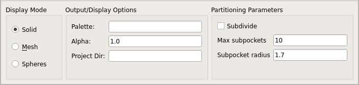

Partitioning Options¶
Partitioning is unexpectedly difficult.

GUI section controlling user binding pocket partition into subpockets
Pocket Specification¶
PyVOL by default recognizes the largest pocket and returns the volume and geometry for it. However, manual identification of the pocket of interest is generally preferable. This can be done through specification of a ligand, a residue, or a coordinate. If a specification is given, the mode is changed to specific by default.